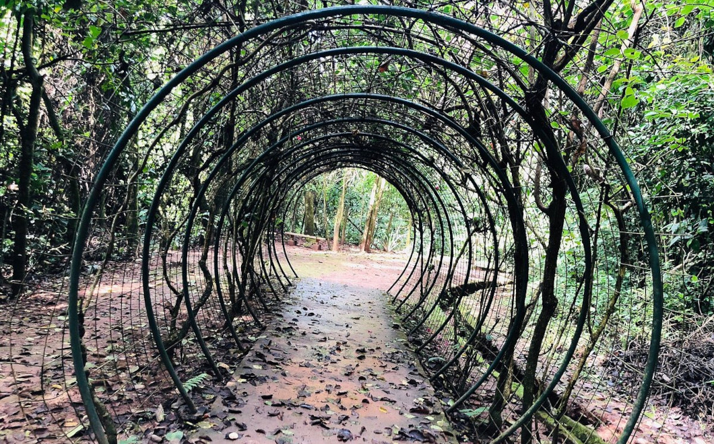

PARQUE NATURAL MUNICIPAL REGO DOS CARRAPATOS

O Parque Natural Municipal Rego Dos Carrapatos está localizado na Região Central de Nova Lima e se destaca por ser um refúgio da natureza em meio a área urbanizada. São cerca de 10 KM de trilha que fazem ligação com outras trilhas/percursos da cidade. No Parque são oferecidos diversos serviços prestados pela Prefeitura que tem uma base fixa no espaço como palestras, caminhadas guiadas e educação Ambiental. No parque há espaços para ginástica e uma Banqueta (tradicionais por toda Nova Lima), oferecendo um percurso diferenciado para os amantes de caminhada e Natureza.